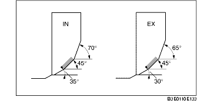

VALVE SEAT INSPECTION/REPAIR
B3E011010102201
1. Measure the seat contact width.
-
• If not within the specification, resurface the valve seat using a 45° valve seat cutter and/or resurface the valve face.
-
Standard width:
-
1.2-1.6 mm {0.048-0.062 in}
2. Verify that the valve seating position is at the center of the valve face.
-
(1) If the seating position is too out side, correct the valve seat using a 70° (IN) or 65° (EX) cutter, and a 45° cutter.
-
(2) If the seating position is too inner side, correct the valve seat using a 30° (IN) cutter, and a 0° (EX) cutter, and a 45° cutter.

3. Inspect the sinking of the valve seat. Measure the protruding length (dimension L) of the valve stem.
-
• If not specified, replace the cylinder head.
-
Standard dimension L:
-
IN: 40.64-42.24 mm {1.600-1.662 in}
-
EX: 40.50-42.10 mm {1.595-1.657 in}